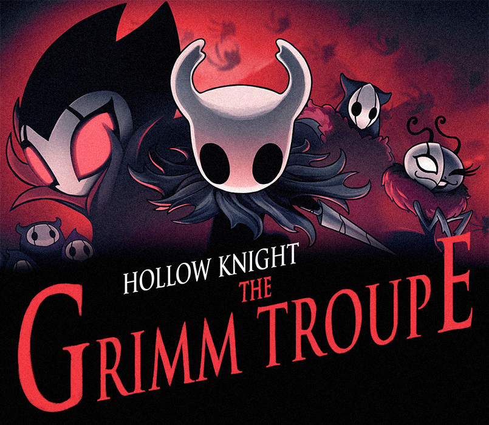
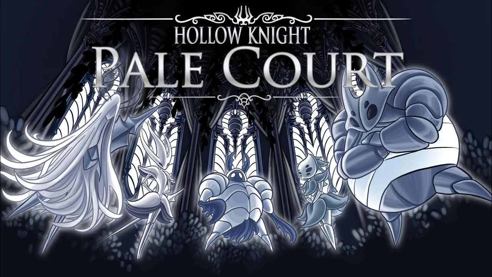
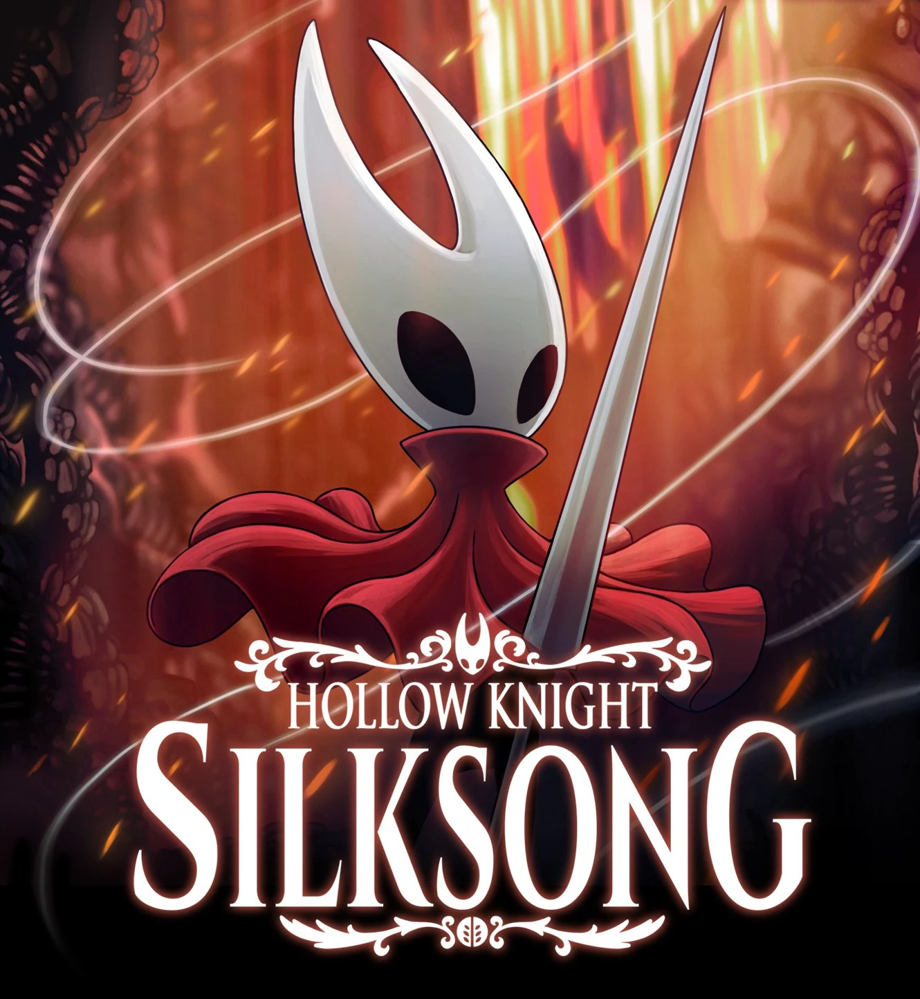
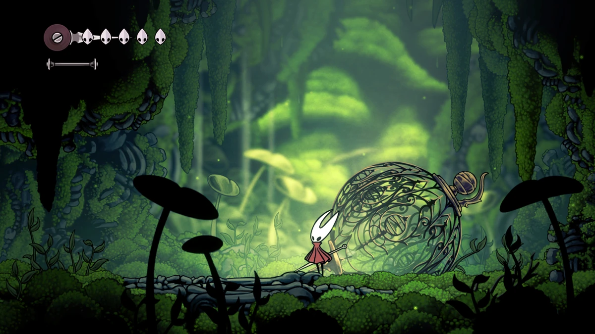
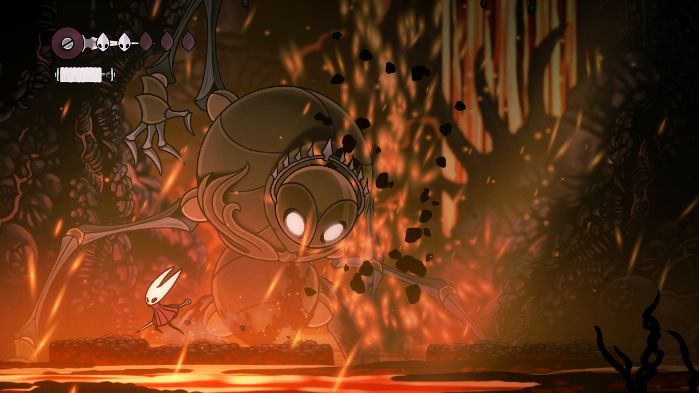

Impact and future
Hollow Knight's resounding success has been a driving force behind the continued growth and recognition of the indie game scene. Its critical acclaim and commercial success have demonstrated that indie games can compete with AAA titles in terms of quality, depth, and storytelling. This has encouraged more indie developers to pursue ambitious and innovative projects, knowing that there is a dedicated audience willing to support and appreciate their work.
The game's success has also helped to validate the viability of the "Metroidvania" genre, a style of game that had previously seen a decline in popularity. Hollow Knight's fresh take on the genre has reignited interest among both developers and players, inspiring new games that build upon the foundations laid by classics like Super Metroid and Castlevania: Symphony of the Night.
Hollow Knight has cultivated a passionate and devoted fanbase, drawn to the game's rich lore, challenging gameplay, and stunning visual design. This fanbase has become a driving force behind the game's continued success and longevity. Fans have created a vast array of fan art, cosplay, and even mods that expand upon the game's universe.
After release, Team Cherry supported the game with four free expansions.
In the second expansion to Hollow Knight, a "Nightmare Lantern" was added to the Howling Cliffs. After using the Dream Nail on a masked bug, the lantern summons a mysterious group of circus performers to Dirtmouth, who identify themselves as the Grimm Troupe. Their leader, Troupe Master Grimm, gives the Knight a quest to collect magic flames throughout Hallownest in order to take part in a "twisted ritual". He gives the player the Grimmchild charm, which absorbs the flames into itself, progressing the ritual and allowing the Grimmchild to attack the Knight's enemies. Eventually, the Knight must choose to either complete the ritual by fighting Grimm and his powerful Nightmare King form, or prevent the ritual and banish the Grimm Troupe with the help of Brumm, a traitorous troupe member.
More content was added to Hollow Knight with the fourth and final expansion, Godmaster, in which the Knight can battle harder versions of all of the bosses in the game through a series of challenges. The main hub of the expansion is known as Godhome, and is accessed by using the Dream Nail on a new NPC called the Godseeker found in the Junk Pit of the Royal Waterways. Within Godhome are five "pantheons", each being a "boss rush", containing a set of bosses that must all be defeated consecutively without dying. The final pantheon, the Pantheon of Hallownest, contains every boss in the game or alternate forms of original bosses. If the Knight completes the Pantheon of Hallownest, the Absolute Radiance, a more powerful version of the Radiance, appears, acting as the new final boss. Upon defeating it, two unique endings can then be achieved, each involving the destruction of Godhome by a powerful Void entity.

On July 1 of 2023, a massive group of modders finally released their Pale Court project (thanks GamesRadar), a pretty beefy expansion that adds tons of new content to the base game, along with a boss rush that has you take on the "Hallownest's greatest champions" in an attempt to "take your rightful place among them". These bosses are completely brand new and built from scratch by these modders, but an impressive amount of work has been done to make them look the real deal.
On top of that, the Pale Court expansion also adds a bunch of new charms that you can use across the base game, though you may want to avoid them if you don't want to upset the balance. There's also brand new music, art, voice lines, dialogue, and pretty much everything else needed to make the update one of the most impressive fan made creations since the game was released.
The community's dedication has also led to the creation of various fan projects, such as interactive lore databases, speedrunning competitions, and collaborative efforts to uncover the game's deepest secrets. This level of engagement and commitment from the fanbase has not only sustained interest in the game but has also encouraged the developers to continue supporting and expanding upon the Hollow Knight universe.
Hollow Knight has a thriving speedrunning community, with players continuously pushing the boundaries of what's possible in terms of completing the game as quickly as possible. The game's challenging bosses, intricate level design, and the sheer amount of content make it an enticing and rewarding title for speedrunners. Several YouTubers have gained popularity for their exceptional Hollow Knight speedruns and entertaining content surrounding the game.
Current speedrunning record is held by SkateKing, a Ukrainian man who has beaten the game in 31 minutes and 24 seconds.
Hollow Knight: Silgsong - The Highly Anticipated Sequel
Now, the creators are hard at work on a much-anticipated sequel titled Hollow Knight: Silgsong. While the original game followed the journey of the silent knight exploring the underground kingdom of Hallownest, Silgsong will shift perspectives. Players will take control of the fierce huntress Hornet as she travels to an all-new distant region on a quest of her own. Though story details are still tightly under wraps, the game promises to expand on the mysterious lore and unseen areas hinted at in Hollow Knight.
Visually, Silgsong appears to be taking everything that made the artwork of the first game so engrossing and ratcheting it up a notch. The showcase gameplay trailer highlighted lush forests, haunting caves, and buzzing cityscapes - all with the same mesmerizing hand-drawn aesthetic. However, the art displays more variation in color palettes compared to the muted tones that dominated portions of Hallownest.
From a gameplay standpoint, players can expect a similar signature "Souls-like" challenge of frantic dodging and well-timed strikes against formidable foes. Hornet's move set will be familiar to anyone who faced her as a boss in Hollow Knight, complete with silky air dashes and lethal thread attacks. At the same time, the developers are adding fresh new mechanics and abilities to master over the course of the adventure.
 While no firm release date has been announced yet, Team Cherry insists that Hollow Knight: Silgsong has been a full-time project and development is nearing completion. The highly anticipated arrival of this grand sequel cannot come soon enough for the legions of fans clamoring to experience the next epic chapter in Hallownest's captivating universe.